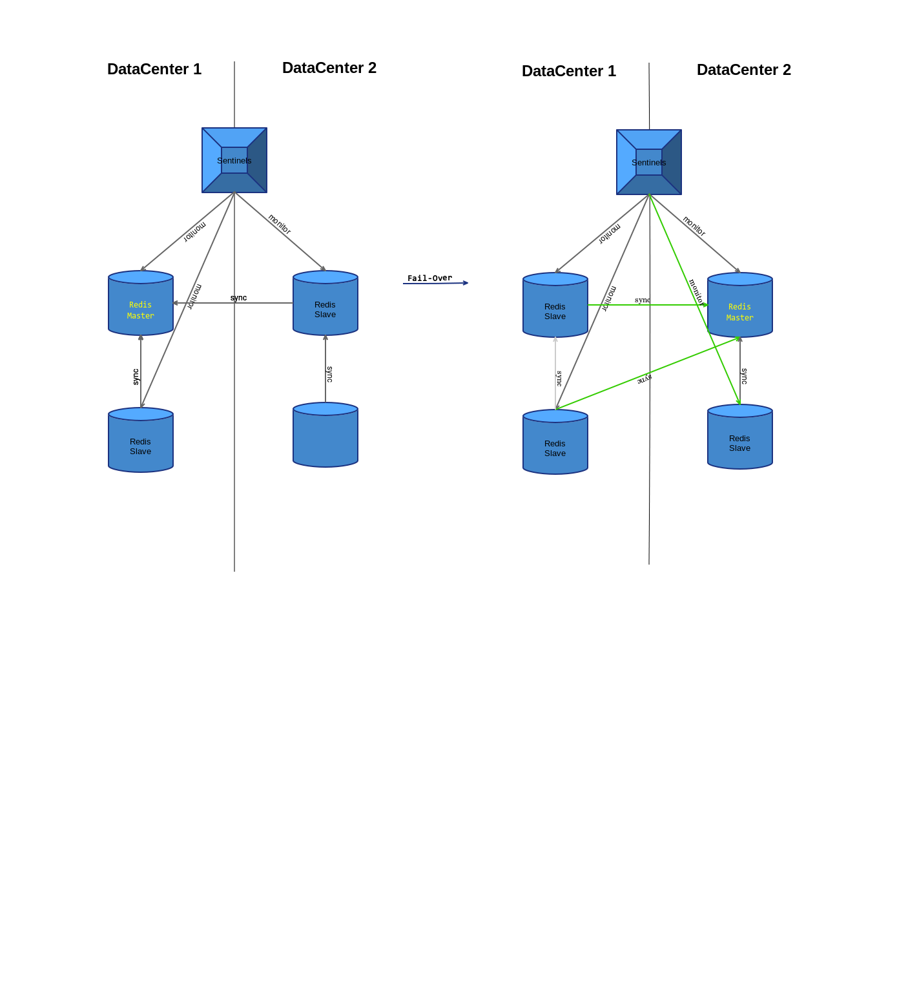

级连同步失效
级连同步的描述（摘自 Replication – Redis）：
Slaves are able to accept connections from other slaves. Aside from connecting a number of slaves to the same master, slaves can also be connected to other slaves in a cascading-like structure.
由此可见级连同步可减轻 Master 的流量。
假设 DataCenter 2 上的两个 Slave 从 DataCenter 1 上的 Master 进行同步，会导致 DataCenter 1 要流出两份流量到 DataCenter 2，开启级连同步（DataCenter 2 上的其中一个 Slave 从另一个 Slave 上进行同步）后，DataCenter 1 只需同步一份流量到 DataCenter2。
Sentinel 以星状组织 Redis 结点，无法发现二级 Slave（Slave 上连接的其它 Slave），也就无法将二级 Slave 信息提供给客户端应用进行访问，应用需要自行连上二级 Slave。另外，一级 Slave 被 Sentinel 切为 Master 后，二级 Slave 将转化为一级 Slave ，从而被 Sentinel 发现。

当 Fail-Over 发生后级连同步会失效，Redis Sentinel 不支持级连同步
Aside from this problems, there is also the problem that for Sentinel the role of an instance is the one published in INFO by the instance. This means that you can't failover a slave that happens to be the master of other chained instances. Also the chained instances will not be detected, and if detected because of a temporary role change for some reason, they'll be reconfigured to replicate with what Sentinel believe to be the master. Basically you can find your ways to make it working but currently the support for chained replication in Sentinel is near zero.
Salvatore
内网流量外网化
跨机房部署就意味着需要跨机房同步或访问 Redis 数据，如果另一机房有多个 Slave，则会有多份流量，机房外网流量会相应增长，需要预先进行流量规划。
Redis 为内网部署提供了如下配置项
Sentinel 的 announce-ip 和 announce-port 选项
要求 Redis 版本至少为 2.8，参见 redis.conf
Redis 的 slave-announce-ip 和 slave-announce-port 选项
要求 Redis 版本至少为 3.2，参见 redis.conf
它们用于解决如下两个问题
Remapping ports and addresses creates issues with Sentinel in two ways:
- Sentinel auto-discovery of other Sentinels no longer works, since it is based on hello messages where each Sentinel announce at which port and IP address they are listening for connection. However Sentinels have no way to understand that an address or port is remapped, so it is announcing an information that is not correct for other Sentinels to connect.
- Slaves are listed in the INFO output of a Redis master in a similar way: the address is detected by the master checking the remote peer of the TCP connection, while the port is advertised by the slave itself during the handshake, however the port may be wrong for the same reason as exposed in point 1.
引用自 Redis Sentinel Documentation – Redis - Sentinel, Docker, NAT, and possible issues
基于 Sentinel 的集群系统中，Redis 实例（角色可能为 Master、Slave 或 Sentinel）是通过 IP 和 PORT 标识的。
Master
自身监听的 IP 和 PORT 并不重要，只要 Slave 和 Sentinel 能够连上即可，所以往往在所有 IP 上进行监听。
Slave
Slave 配置中指定的 Master 结点 IP 是关键所在。
Slave 建立到 Master 的 TCP 连接时，Master 获取到的对端 IP 和 PORT 标识该 Slave，在 Master 的 INFO 命令中体现。
Slave 连接的 Master IP，经由路由规则，也就决定了 Master 看到的是 Slave 的哪一个 IP。
可以通过 slave-announce-ip 和 slave-announce-port 配置项强制指定。
Sentinel
Sentinel 配置中指定的 Master 结点 IP 是关键所在。
Sentinel 建立到 Master 的 TCP 连接后，调用
getsockname从 fd 中取得本地 IP，PORT 则为配置的监听端口，并通过 PUBLISH Hello 消息告知其它 Sentinel。Sentinel 连接的 Master IP，经由路由规则，也就决定了 Sentinel 看到的自身 IP。
可以通过 announce-ip 和 announce-port 配置项强制指定。
DataCenter 2 上部署的应用会通过 Sentinel 获取到 DataCenter 1 上的结点（角色可能为 Master、Slave 或 Sentinel）信息，然后连接、访问，所以 Redis 实例（角色可能为 Master、Slave 或 Sentinel）都至少需要监听外网 IP。
通过外网 IP 访问同机房内结点，不会导致流量外网化，上级交换机识别到目标 IP 就在网络内，走的还是内网。
应用程序从 Sentinel 获取 Slave 列表后，最好优先连接同一数据中心的 Slave 结点。
相关资源
- Redis Sentinel Documentation – Redis
Replication for read-scalability - Google 网上论坛
通过公网跨数据中心复制数据相关的问题：安全、迟延等
Sentinels in Multi Region configuration - Google 网上论坛
Redis Sentinel 多数据中心配置问题
Redis in Action - Scaling reads
Redis 压缩、安全传输相关